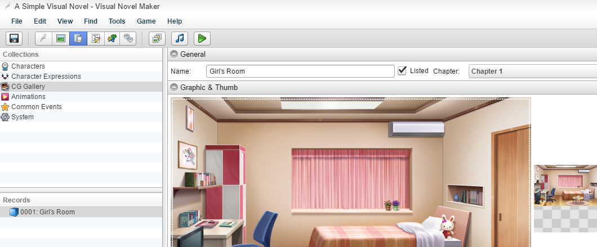

CG 图库

通用名称
- CG 图库条目的名称。- 如果选中，将在游戏中 CG 图库中显示一个 [?] 缩略图。否则，它将不会出现在 CG 图库的“已锁定 CG”列表中。
章节- 这是设置 CG 将列在哪个章节的选项。
图像和缩略图
图像- CG 的全尺寸图像。
缩略图- CG 的预览，将在 CG 图库选择界面显示。它应该是原始 CG 尺寸的 1/8。如果不是，它将被自动缩放到该尺寸，但仍会消耗与原始 CG 相同量的内存。因此，建议在此处提供已缩小的图像。